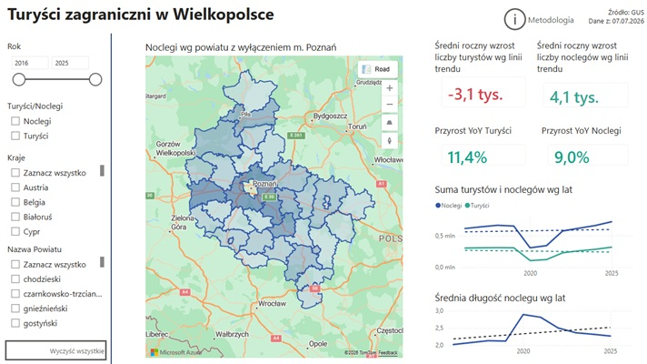
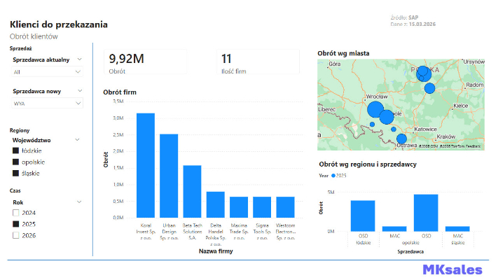
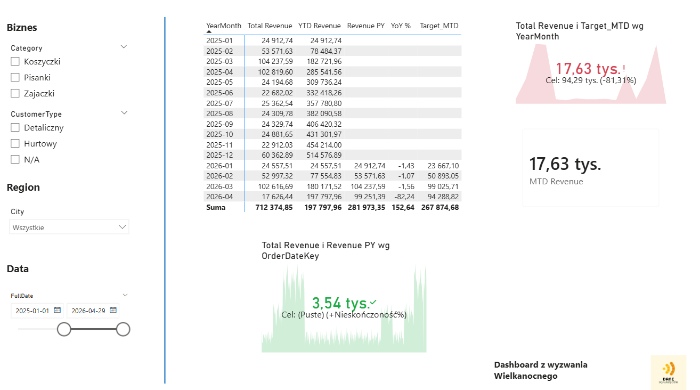
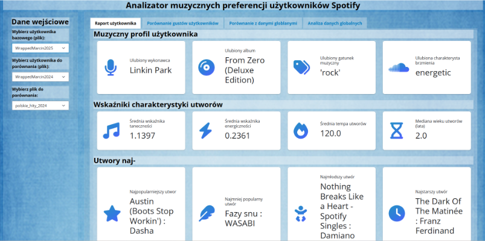
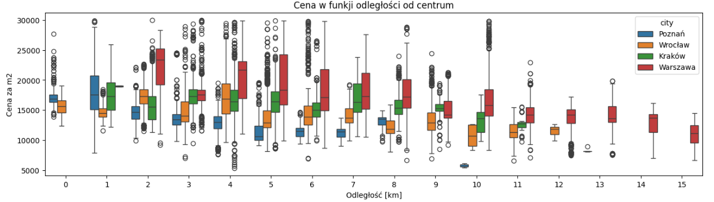

Analityczny umysł z silnym tłem inżynierskim i 14-letnim doświadczeniem w optymalizacji procesów przemysłowych. Wniosę do organizacji znajomość wymagań biznesowych, pracę w interdyscyplinarnych zespołach oraz umiejętność zbierania założeń projektowych. Łączę to z doświadczeniem przetwarzania danych w zakładach produkcyjnych. Poniżej prezentuję wybrane projekty analityczne i inżynierskie, które pokazują moje podejście do danych, modelowania i wizualizacji. Oparte są o moje doświadczenie w biznesie - wybieranie i analizę metryk, które mają znaczenie oraz prezentację ich w sposób klarowny dla różnych profesjonalistów.

Dashboard zrealizowany w ramach Klubu Języka danych obrazujący strukturę turystyki zagranicznej w Wielkopolsce.
Zobacz projekt
Dashboard wspierający decyzję przypisania klientów do nowego sprzedawcy. Bierze pod uwagę historyczne obroty klientów, ilość spotkań, szanse sprzedażowe oraz potencjał klienta. Pokazuje na mapie wybranych klientów. KPI, segmentacja klientów, mapy.
Zobacz projekt
Wielkanocnym Wyzwaniu Danych w ramach Dane Są Wszędzie! Analiza SQL i PowerBI: OBT, Data Intelligence, KPI oraz ODS.
Zobacz projekt
Pipeline czyszczenia i walidacji danych. End-to-end data pipeline: uzupełnie dane z pliku csv przez API (Ingestion), następnie obrabia je w Pythonie (Curation), a na końcu wyświetla je za pomocą Shiny (Insight).
Zobacz projekt
Case study od Dane i Analizy. Analizuje ceny mieszkań w Polsce. Zaczyna się od wczytania, oczyszczenia i wstępnej analizy danych. Następnie wizualizujemy dane. Ostatnim krokiem jest modelu uczenia maszynowego: przygotowanie, trenowanie i wykorzystanie.
Zobacz projekt